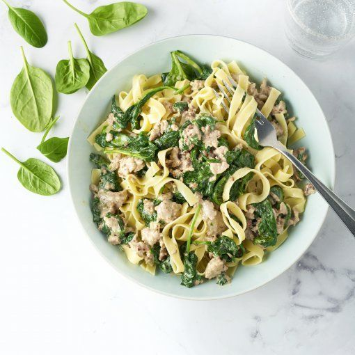

Spinach Pasta

Description
This pasta is a very quick and easy meal.
I've made different variations in the past. But this one is my favorite. You can change some ingredients very easily and make it your own.
Ingredients (for 2 people)
- 200 gr of pasta
- Can of tuna
- 450 gr of spinach (a la creme, frozen)
- 150 gr of cream cheese with herbs
- Grated cheese as garnish
Steps
- Cook the pasta according to its package.
- Throw the spinach into a sauce pan and stir it regularly to not let it stick to the pan. You can add butter, but its not needed.
- When all the pieces of spinach are defrosted, add the cream cheese and stir it until the mixture is smooth.
- Drain the can of tuna and put the tuna into the mixture of spinach and cream. Stir it again.
- Serve it with grated cheese.